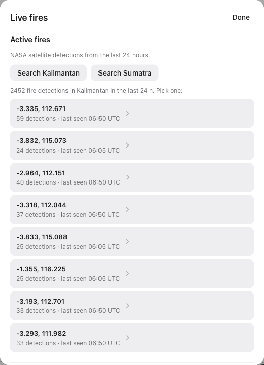

12 of 18 new fire spots caught · CSI 0.41 · distance-only 0.17
white rings = what the satellites saw next
LIVE
0
fire detections in Kalimantan in the last 24 h
Search Kalimantan returns the most active NASA FIRMS clusters, with detection counts and last-seen times.

2452 fire detections in Kalimantan in the last 24 h. Pick one:
Here is a real West Kalimantan fire, frozen at the last satellite pass on the eighteenth of October, twenty twenty six.The next day the satellites found eighteen new fire spots. The forecast caught twelve: a critical success index of point four one,against point one seven for a distance-only baseline. The white rings are what the satellites saw.Live, Kalimantan shows two thousand four hundred fifty two detections in the last day.